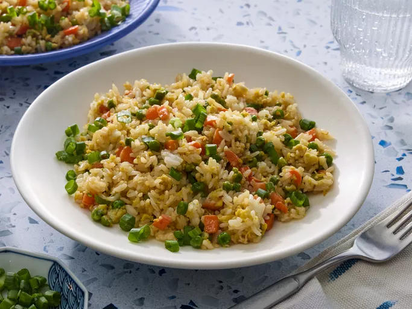

Home
Fried Rice

Source: all recipes
Description
A redditor's recipe for Fried Rice.
Ingredients and Steps
- A fairly large pan, preferably one that holds its heat very well. If you have a wok then even better. A regular pan is prefered over a non-stick.
- Day-old rice
- Two eggs
- Salt and Pepper
- Soy sauce and sesame oil
- High smoke point oil or beef/pork tallow
- 1 Shallot
- 1 Garlic clove
- A ladle
- 1 teaspoon of MSG
- Optional: Hot Peppers
- Optional: Protein of choice
- Optional: Spring Onion
- Let your pan heat on the highest setting you have available in your stove.
- Once its hot (test it with a bit of water, if it evaporates, let it heat more, if the water forms "pearls" and dances around, you are good to go). Add a bit of oil/tallow, let it heat up a bit.
- Toss in your eggs and mix them vigorously, breaking them apart. You want the pieces of egg to be on the smaller side, and let them have a bit of browning on them.
- Next, move the egg aside a bit (in the same pan), and toss in your onion/shallots and garlic. Keep them moving, they have a lot of sugar and will burn rather quickly. Once they start getting fragant, mix them with the egg, and move them aside in the pan.
- If needed, you can add a bit more oil, and put the rice in. Mix everything and keep it moving. You want to keep the heat as high as possible at all times, and you want the rice grains to kind of "pop", like popcorn. Break any clumps with your laddle (or whatever tool you're using), you want your rice grains to be separate. Keep tossing it, keep it moving.
- When your rice starts "popping", throw in your spring onion whites, hot peppers, and protein, and continue tossing everything together. Add your MSG or salt (just a bit) and your white pepper (black pepper works as well). Continue tossing a bit.
- When everything has been well mixed together well, grab your soy sauce and pour it on the edges of the pan, so that it hits the metal directly, you want to evaporate as much of its water content as possible. Immediately toss and mix your rice to get it nicely coated with the soy sauce.
- After the rice is coated and looks nice and a bit dark from the soy sauce, turn off the heat, and add a bit of the sesame oil (like half a tablespoon to a tablespoon) you definitely don't want too much of it in your fried rice.
- Finally, serve and garnish with the greens of the spring onion, and enjoy.